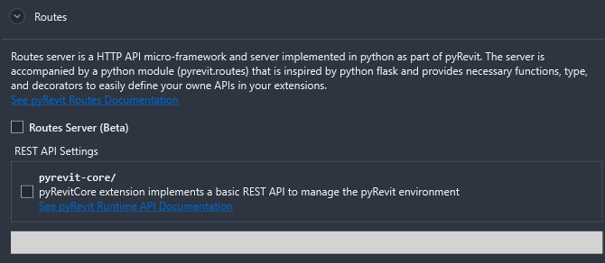
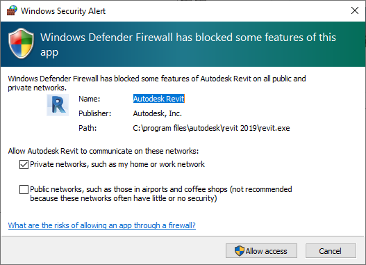
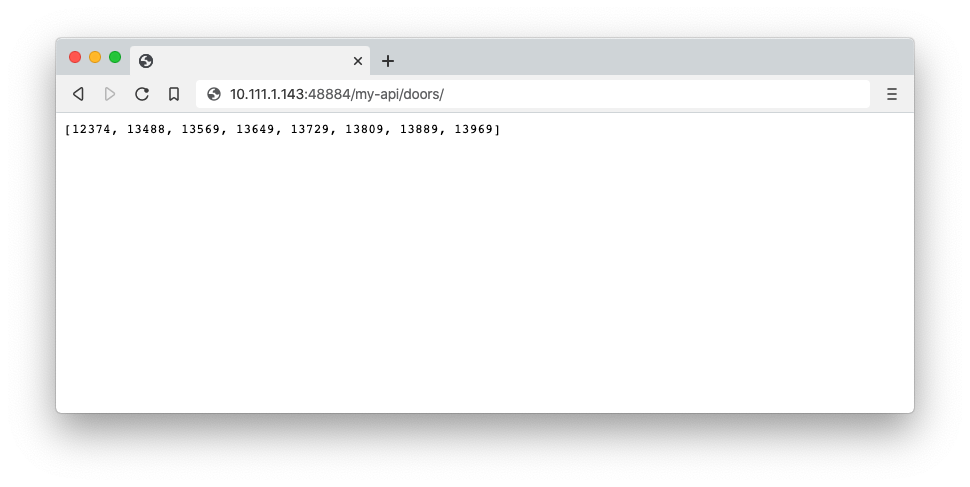
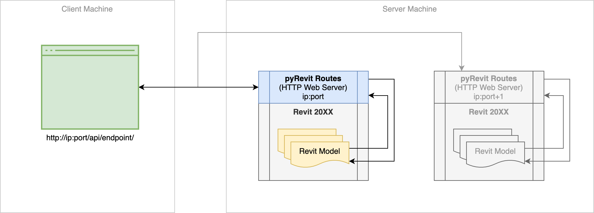

Routes (HTTP API)
pyRevit Routes is a DRAFT and is subject to change
There is no authentication mechanism implemented yet
pyRevit Routes is a fairly isolated module under pyrevitlib/pyrevit/routes/ in pyRevit source. You are encouraged to dive into the code and contribute to the project without affecting the other parts of the pyRevit ecosystem
What is pyRevit Routes
Let's say we want to create a web application that would display a list of doors in a model. The web application would be split into two parts.
- Front-end: the part that runs in the browser and acts as the user interface, and
- Back-end: the part that the front-end contacts to send and receive data
While you are free to select whatever toolchain and GUI framework (React, Vue.js, etc) you are comfortable with for the front-end, the challenge has always been on how to create a back-end that has access to Revit contexts and can query or modify Revit documents. What we really needed is to run a HTTP web server over a running Revit instance and manage the HTTP calls in a way that would be executed in Revit context.
The new Routes python module, is an HTTP micro-framework to create web APIs running over Revit instances. This means that you can create functionality that could be triggerd from remote. This framework provides the necessary mechanism to create a back-end that has access to Revit context.
Fun fact: The Runtime REST API is implemented using this framework
Getting Started
Let's create a simple API using the routes module. One important note here is that it is better to place this API inside your extensions' startup script (startup.py) so it only runs once per Revit instance.
Creating Custom HTTP API Extension
Let's create an empty extension that will define our new HTTP API:
Note that the extension does not include anything else other than the startup.py script.
Now let's open the startup.py and import the routes module. This module provides the functionality we need to define the API:
Then we need to define a new API...
What is a Routes API
Routes API is very similar to a Flask App but at the same time is slightly different. Let's look at the structure of an API end point in pyRevit routes module:
machine-ipis the IP of the machine running Revit and the Routes serverserver-portis the Routes server portroutes-apiis the name of API defined by you. Each program or extension can define their own APIs or extend other APIs as long as the routes do not conflict. This is bascially the root path of all the endpoints defined in your Routes APIapi-path/...is specific routes define in your API e.g.doors/
So with that knowledge, we are going to define our new API. We are using my-api as the unique name of our custom API:
API Endpoints
Now that we have the API ready, we can define our API end points. To collect doors from an active Revit model, we would want to collect (HTTP method GET) and the doors/ in active model using our custom API my-api/. So our API endpoint would look like this:
GET my-api/doors/
Let's define this endpoint. First we need to create a function that collects the doors in the model:
def get_doors(doc):
"""Find doors in given model"""
doors = DB.FilteredElementCollector(doc)\
.OfCategory(DB.BuiltInCategory.OST_Doors)\
.WhereElementIsNotElementType()\
.ToElements()
Notice that we have included a doc argument for our function since we do not know what the active document would be when this function is being triggered by a HTTP request from outside. So we would need the routes module to provide us the active document as the doc argument. See sections below to learn about other predefined arguments that you can define for your logic functions and the implications of each.
Now that we have our logic function, let's tell the Routes module that this is the function we want to be triggered when an HTTP call is made to the my-api/doors end point that we have decided on. The api object we created, provides handy decorators to make this process very easy:
@api.route('/doors/') #<---- add decorator to the function
def get_doors(doc):
"""Find doors in active model"""
doors = DB.FilteredElementCollector(doc)\
.OfCategory(DB.BuiltInCategory.OST_Doors)\
.WhereElementIsNotElementType()\
.ToElements()
You might have noticed that we do not need to include the my-api part of the endpoint, since that's the root of our API and all the endpoints defined using api.route will end up after the API. So @api.route('/doors/') will mark the logic function for my-api/doors endpoint.
Returning Results
Now that we have the logic connected to the endpoint, we can prepare the doors data we have collected as a Response to be sent back to the caller. Let's say we would want to return the Ids of the doors at this point:
@api.route('/doors/')
def get_doors(doc):
"""Find doors in active model"""
doors = DB.FilteredElementCollector(doc)\
.OfCategory(DB.BuiltInCategory.OST_Doors)\
.WhereElementIsNotElementType()\
.ToElements()
# let's grab the integer ids of the door instances
doors_data = [x.Id.IntegerValue for x in doors]
and now we can use the routes module again to prepare a reponse:
@api.route('/doors/')
def get_doors(doc):
"""Find doors in active model"""
doors = DB.FilteredElementCollector(doc)\
.OfCategory(DB.BuiltInCategory.OST_Doors)\
.WhereElementIsNotElementType()\
.ToElements()
doors_data = [x.Id.IntegerValue for x in doors]
# create response and return
return routes.make_response(data=doors_data)
We are passing a python list (serializable data type) as the response data to the routes.make_response() function. This function has more arguments that you can read about in the sections below but for this example we use the defaults (e.g. HTTP response status defaults to 200 OK)
Well done. Our API endpoint is ready. Let's fire up Revit and the HTTP server now...
Starting Up The Routes Server
Let's start Revit. The Routes server is disabled by default. After Revit is fully loaded, open pyRevit Settings, and under the Routes section, turn on the server.

The default port for the server is set to 48884 . The first instance of Revit will use the port 48884, the next Revit instance will use 48885 and so on. See below for information about the pyRevit Routes Core API that could be used to inspect the running Revit instances and their port numbers remotely.
Now Restart Revit. This time Revit will run the startup.py in your extension and will attemp to start the Routes Server.
Your operating system might ask you if you want to allow the Routes server (now running inside Revit) to open a connection to the outside and start listening on the predefined port number.

Now that your Revit is fully loaded, and the pyRevit Routes server is also running and authorized to listed on the port, we can test our API endpoint:
- First open a model that contains a few doors so our API endpoint has some data to return
-
Then go to a different machine on your network, open a browser and type this path in the address bar. Replace the
<machine-ip>with the IP address of your machine that is running the Revit instance. You can see that in the Example provided under the Routes server status message in pyRevit settingshttp://<machine-ip>:48884/my-api/doors/
You should be able to see a list of door Ids returned as a JSON list object

Advanced Routing
Function Arguments
The predefined arguments listed here can be added to your handler functions if needed. The Routes server will set the appropriate value on these arguments if necessary.
requesta routes.Request object will be passed as this argument that contains information about the request that triggered the executionuiappis a reference to the UIApplication object provided by Revit runtimeuidocis a reference to the UIDocument object provided by Revit runtimedocis a reference to the active Document object provided by Revit runtime
IMPORTANT NOTE: if any of the uiapp, uidoc, or doc arguments are defined in your handler function, the Routes server will assume your handler function needs Revit API context and will execute your function as an External Event using the Revit API. This way your handler function can use transactions to make changes to the Revit document and is guranteed to be the only function running in API context
Defining Routes
The api.route decorator can be used to create more complex routes:
Request Methods
You can pass the acceptable HTTP methods for your handler function to the decorator as shown below:
The request argument on your handler functions can be used to check which HTTP method is being called on the endpoint:
@api.route('api/end/point/method', methods=["GET", "POST"])
def test_method(request):
if request.method == "POST":
# do post stuff
else:
# do get stuff
Route Parameters
You can define a series of parameters to be extracted from the endpoint path and passed to the handler function.
Define the parameter following the /<type:name>/ format e.g. /<int:door_id>/ in the example below:
# /doors/12
# /doors/2313
@api.route('/doors/<int:door_id>')
def post_id(door_id):
# do stuff with door_id
A few other data types are supported as well (int, float, bool, uuid)
@api.route('/doors/<uuid:door_uniqueid>')
def post_uuid(door_uniqueid):
# do stuff with door_uniqueid
Request Data
The request argument on your handler functions can be used to grab any data being passed to the endpoint:
@api.route('api/end/point/data', methods=["POST"])
def test_data(request):
if request.data:
# process data
Request Headers
The request argument on your handler functions can be used to grab request headers:
@api.route('api/end/point/headers', methods=["POST"])
def test_headers(request):
headers = request.headers # dictionaty of header key:value
Returning Results
The routes.make_response function can be used to prepare a routes.Response object:
@api.route('api/end/point/reponse', methods=["POST"])
def mirror(request):
return routes.make_response(
data=request.data,
status=routes.OK,
headers = {"pyRevit": "v4.6.7"}
)
Providing Callback URL
API calls to the Routes server can provide a callback URL when the endpoint handler is going to take a lot of time to complete the work. Include the callbackUrl in the data sent by the HTTP request:
If callback URL is provided, the server will immediately accept the request and will sent back status 204 NO_CONTENT
When the handler function completes the work, the Routes server will make a POST call to the callback URL and will provide the results on the handler function
Exceptions
The Routes server will provide information about any exceptions that occur when running your handler function:
{
"exception": {
"source": "Autodesk Revit 2019.2 build: 20190808_0900(x64)",
"message": "ZeroDivisionError: Attempted to divide by zero.\n File \"...\""
}
}
pyRevit Routes Core API
pyRevit Routes defines its own core API to help you test the status of the running instances of the Routes server on the target machine. Note that at least one instance of Revit must be running to be able to receive and respond to these calls.
See this page for more information about the routes/ and pyrevit-core/ APIs
- Runtime REST API
Server Configurations
Configuring Starting Port Number
Use the pyRevit CLI to configure the starting port number for the Routes servers running on the host machine. First Revit instance will start with this number and other instances will continue up adding one for each instance e.g. 48884 → 48885 → 48886 → ... See Runtime REST API for methods to know about running Routes servers on a machine
# read port number
$ pyrevit configs routes port
Routes Port: 48884
# set port number
$ pyrevit configs routes port <port-number>

Each new Revit instance uses the next available port number
pyRevit Core API
See Runtime REST API for pyRevit Core API that provides methods to manage the pyRevit environment itself. This API can be toggled using the pyRevit Settings window or the pyRevit CLI
# read core api status
$ pyrevit configs routes coreapi
Routes Core API is disabled
# set core api status
$ pyrevit configs routes coreapi enable
$ pyrevit configs routes coreapi disable
Runtime REST API is a DRAFT and is subject to change
There is no authentication required
There are no validations performed on the schema
See the guide below on configuring the TCP port for the Runtime HTTP server
pyRevit Routes Runtime API routes/
GET status/
Get the status of Routes Server
{
"host": "Autodesk Revit 2019.2 build: 20190808_0900(x64)",
"username": "jdoe",
"session_id": "07ba444f-0494-4c63-ba25-512b099c756e"
}
GET sisters/
Get all the other running instances of Routes server
[
{
"host": "Autodesk Revit 2019.2 build: 20190808_0900(x64)",
"process_id": 8964,
"server_host": "",
"server_port": 48884,
"version": "2019"
},
{
"host": "Autodesk Revit 2021.0 build: 21.0.0.383",
"process_id": 612,
"server_host": "",
"server_port": 48885,
"version": "2021"
}
]
GET sisters/\<int:revit_year>
Get all the running instances of Routes server on a specific Revit year
[
{
"host": "Autodesk Revit 2019.2 build: 20190808_0900(x64)",
"process_id": 8964,
"server_host": "",
"server_port": 48884,
"version": "2019"
}
]
pyRevit Core Runtime API pyrevit-core/
POST sessions/
Reload pyRevit remotely into a new session. Returns new session info